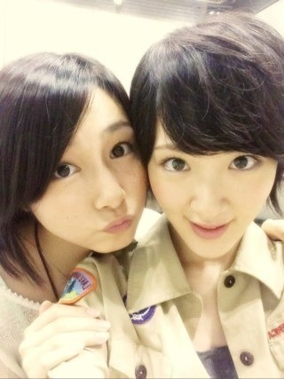

| 2013/07 29 Mon | いろいろ学び中ヽ(・∀・)ﾉ |
どうもみなさん！おはようごぜーます！
元気ですか？
気付けば七月も終わってしまいますよ(ﾟ⊿ﾟ)
はやいはやい時が経つのがはやいはやいヽ(・∀・)ﾉ

今日はいろいろ思ってる事書くよ〜
ま！
みなさんはてきと〜に流して下さい笑
いこまあまりアイドルらしさとか今までわからなくて最近やっと東京にも慣れてきて握手会などでも
人見知りだった分、どう話せば良いのかとかだんだん分かって来た気がします！
握手ぎこちなくてごめんなさい(；д；)
テレビとかもどう喋ればよいのか？
写真もどう写ったらよいかとかいろいろ試行錯誤しています！
特に喋り方はね〜
よく言えば特徴的だから笑
いくら滑舌気にしてもあんまりよくないのよね〜
人それぞれ捉え方は違う！
いろんな意見があるのが普通なんだよね〜(´ω｀)
うん。
いこまはまだまだなんですよねヽ(・∀・)ﾉ
だからこれからいろんな事に挑戦すると思います！
それをみなさん暖かく見守って下さい！
本当！よろしくお願いします！
でも！
自分らしく頑張ります！
いこまみたいなアイドルもいるんだよって！こんなやつでも頑張ってるよと伝わるように！
自分を応援してくれる味方がいらっしゃる。ありがたい事です。
ありがたい。
みなさんありがとうございます！
いこま伝え方下手くそだから伝わりにくいと思いますが‥‥(；д；)
すみませんっ！
いきなり書きましたが！
いこまは元気ですヽ(・∀・)ﾉ

れなおっ！
ずっと前からとある予定を立てているのですがこれがなかなか叶わない！
早く行きたいね〜ヽ(・∀・)ﾉ
最近ハナエさんの曲を沢山聴いてきます！
みなさんハナエさん知ってます？
知ってる方教えてね！
あの歌声はかわいくてかわいくて癒される！あんな風に歌ってみたいな〜
歳も一歳しか違わないのに！尊敬！
という訳で！
これからお仕事ですのでねっ！
とある撮影でございます！
ふふっ
へばなっ！